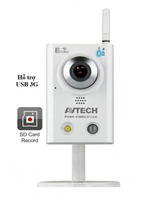
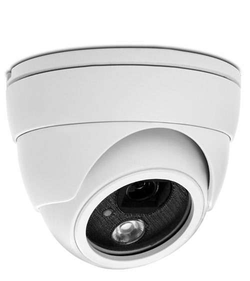
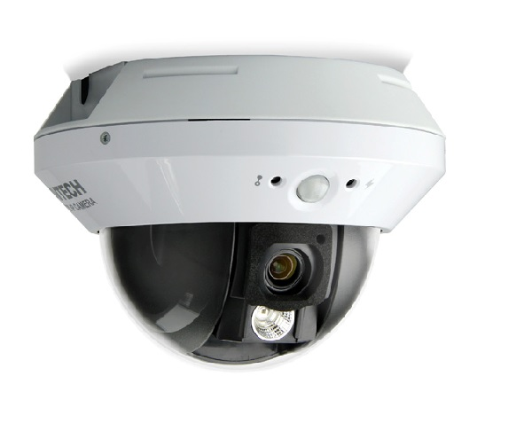
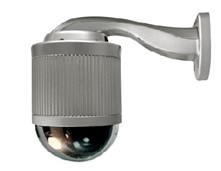

Hướng dẫn phân loại camera quan sát
Bạn đang có nhu cầu mua camera cho gia đình, siêu thị hay công ty bạn, nhưng có rất nhiều loại camera khác nhau, bạn không biết nên dùng loại camera quan sát nào cho phù hợp với mục đích của bạn. Dưới đây các loại camera mà bạn nên biết trước khi lắp đặt:
Camera không dây

Kích thước đa dạng từ lớn đến rất bé (nút áo). Rất tiện cho khu vực không thể đi dây, cần che giấu, nguỵ trang…
Mini camera
Kích thước nhỏ và rất nhỏ. Dùng lắp đặt những nơi mà người sử dụng không muốn người khác biết đang bị giám sát. Có thể nguỵ trang trong tượng, tranh, đồng hồ…
IP camera

Camera quan sát qua mạng, không cần gắn vào máy vi tính. Thích hợp cho quan sát từ bất cứ nơi đâu phù hợp với những người có nhu cầu làm việc từ xa, theo dõi hoạt động, giám sát nhân viên hoặc mọi người.
IR day/night camera
Camera quan sát hồng ngoại màu tự động cân bằng độ sáng chói của ngày và đêm. Sử dụng trong trường hợp nơi quan sát ánh sáng yếu hoặc không có ánh sáng vẫn có thể nhìn rõ mọi vật với hình ảnh trắng đen. Dùng lắp đặt cho kho hàng, bãi giữ xe, cổng ra vào nhà máy, xưởng, xí nghiệp, nhà biệt thự.
PTZ camera: (Pan Til Zoom)
Có khả năng điều chỉnh phóng to, thu nhỏ, kéo xa – gần, nhờ vào ống kính quang học (optical) và điều khiển kỹ thuật số. Loại này được chia làm hai nhóm nhỏ là:
- Dome camera: dạng tròn dùng lắp đặt trên trần nhà.

- Speed – Dome camera: cao cấp hơn, tốc độ điều khiển nhanh, lấy cận cảnh với tầm hoạt động chính xác theo từng góc. Sử dụng ở các sân bay theo dõi được cho từng trường hợp đối tượng và có thể nhớ nhiều vị trí góc quay thiết lập sẵn mà không cần điều khiển nhiều.

Cần nạp mực hoặc sửa máy in tận nơi? Mực In Trường Phát có mặt trong 30 phút tại TP.HCM — in test trước khi tính tiền, bảo hành 1 tháng.
0908.327.123 · 0819.007.394 (Zalo cả 2 số)